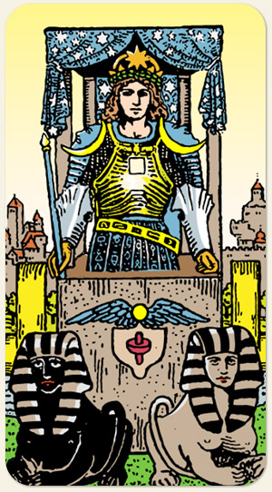

Um arcano de água com o fundo amarelo fala do equilíbrio entre razão e emoção. A emoção como guia, sendo lapidada pela razão. O pano de fundo azul da carruagem também tem estrelas de cinco pontas. Viagens de curta distância ou duração, feitas por terra. Ligado ao signo de Câncer.
A imagem passa a impressão de que o cocheiro e a carruagem são únicos e inseparáveis.
Positivo: Siga rumo à sua vontade, vá onde você quer chegar. Ter um propósito, seguir em frente, acelerar, vencer, a força que temos quando desejamos algo.
Negativo: Falta de energia para alcançar algo, ânsia e ansiedade para alcançar algo a ponto de atropelar e passar por cima dos outros, não aproveitar a jornada, não ter uma linha de chegada, estar desorientado, falta de objetivos.
Amor e Sexo: Relacionamentos passageiros e marcantes, conhecer um parceiro em viagem, relacionamentos à distância, parceiro extrangeiro, parceiro que viaja muito ou ausente, o cara que tem uma família em cada cidade, pessoas que caminham juntas, ser usado como o cavalo que puxa a carruagem. Alguém do passado que reaparece, se apaixonar por alguém que já conhecia, reatar um relacionamento, ser visitado pelo passado, êxito nos relacionamentos, rotina, ritmo, estilo de casal mais caseiro, ser deixado pelo parceiro, um término que não reata. Casal que se muda, que faz tudo junto. Sexo fora de casa, coito rápido, pessoa que gosta de conduzir o outro durante o sexo.
Trabalho e Dinheiro: Trabalhos que envolvem viagens ou deslocamentos, trabalhar longe de casa, trabalhar com meios de transporte, auxílio transporte, veículos da firma, acidentes de trânsito, ser deslocado do cargo, ser reconhecido dentro da função. Dinheiro que precisa estar em movimento, vindo da família, gastos com viagens ou meios de transporte. Uns tem um caminho mais reto e outros um caminho mais tortuoso para a prosperidade, dinheiro com coisas passageiras temporárias, dinheiro se esvaindo, ficando pelo caminho, cuidados ao transportar dinheiro, esquecimentos que levam a prejuízos financeiros.
Espiritualidade: A vontade de seguir em direção ao que é espiritual. Referência: Rudolf Nureyev e Margot Fonteyn. Buscar outros níveis, outras dimensões, é uma busca diferente da busca feita pelo Eremita: mais velocidade e menos reflexão, mais orientação externa e menos orientação interna. A jornada da vida, a encarnação, transitar entre vários mundos, tentar um atalho para o céu, enguiçar, travar, abandonar o caminho, hipocrisia, ser um peso para si próprio, não conseguir acreditar e confiar em si ou no sobrenatural, zona de conforto.
Símbolos: Cocheiro, Esfinges, Lua Crescente, Lua Minguante, Cetro, Coroa, Lingam-Yoni, Cidade ao Fundo, Rio, Pomo Dourado, Estrela de Seis Pontas, Estrela de Oito Pontas.
Cores: Amarelo, Azul Vermelho, Cinza.
Elementos: Água e Espírito.